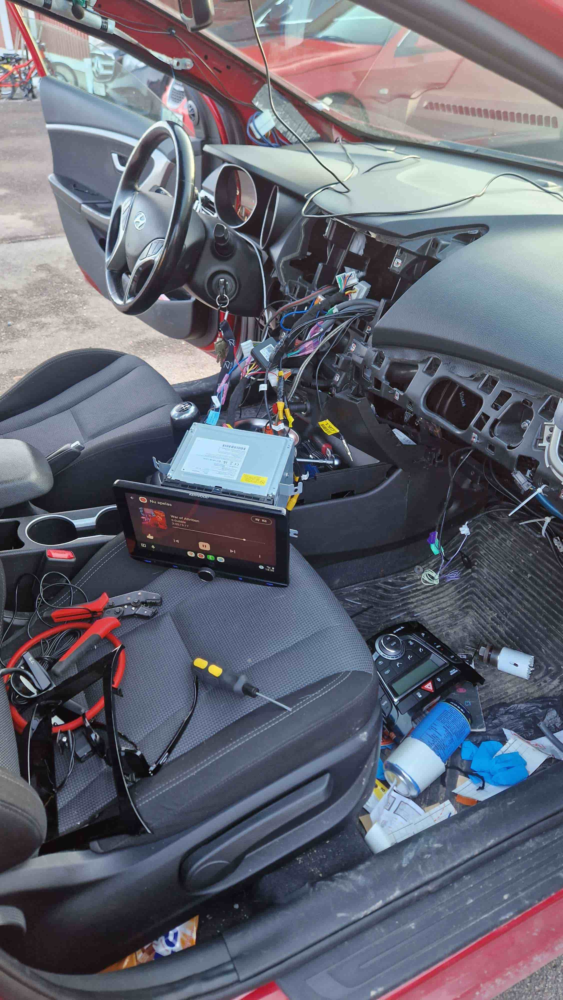
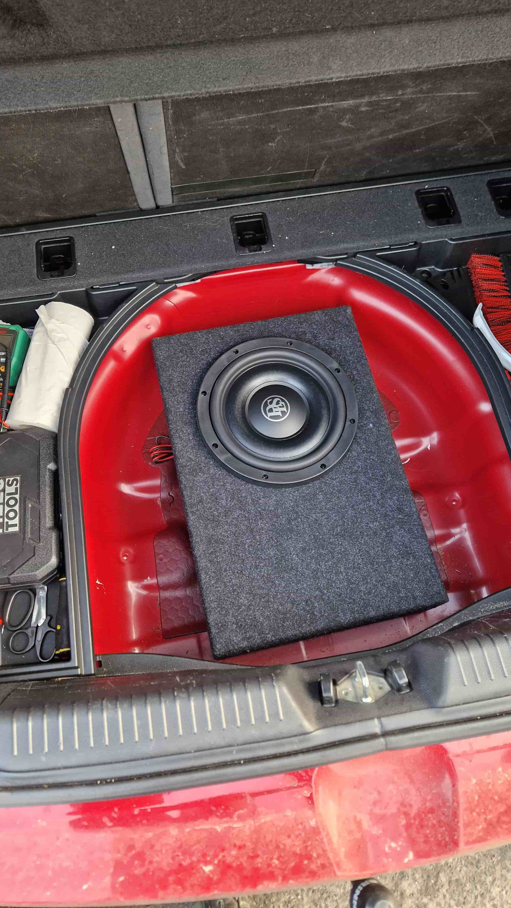
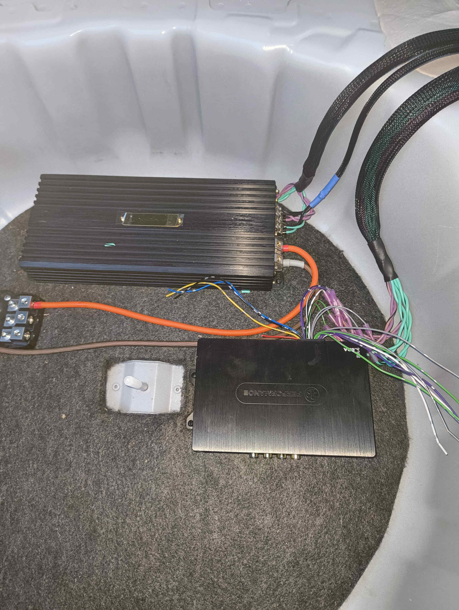
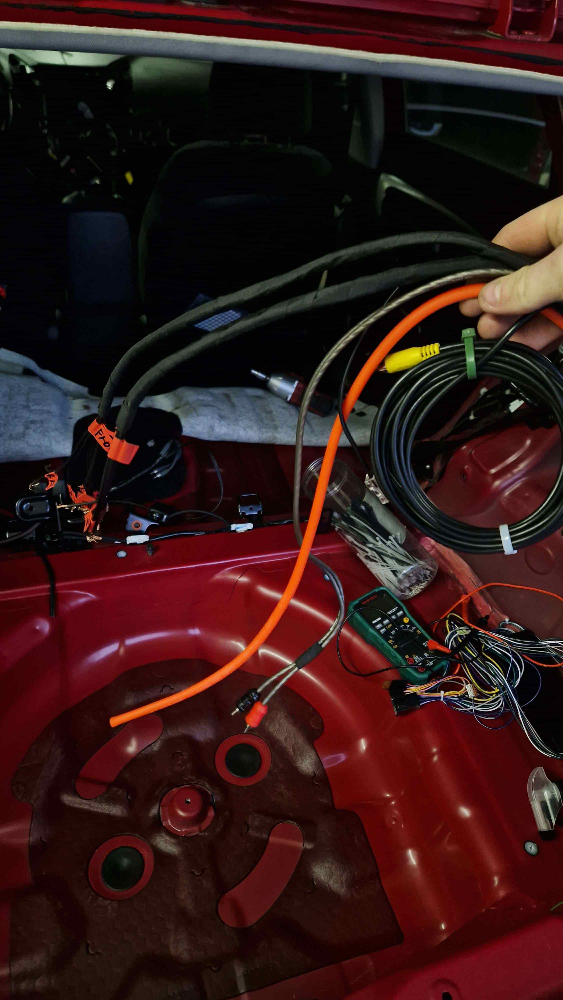
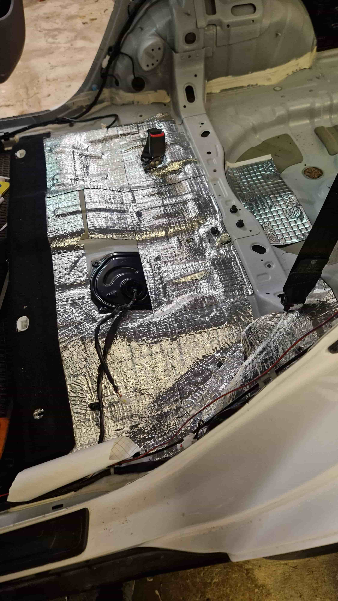

Bilstereo & Radio
Vi installerar alla typer av bilstereon — från enkla DAB+-radioapparater till stora Android-skärmar med CarPlay och Android Auto. Kablar dras alltid dolda, och fasciapanelen monteras tillbaka precis som originalet.
Vi hanterar även OEM-integrationer för bilar med rattmanöver, backupkamera och kvarvarande sensorer som behöver bevaras.
- Apple CarPlay & Android Auto-aktivering
- DAB+ digital radio
- Rattstyrningsadaptrar
- Kameraingång och parkeringssensorintegrering
- Fabriksljudsanpassning (Canbus/OEM)

Subwooferinstallation
Ett riktigt basdjup kräver rätt sub, rätt låda och rätt placering. Vi hjälper dig välja subwoofer efter din musiksmak och bilmodell, och bygger eller anpassar koffertlösningen så den passar perfekt.
Förstärkaren kalibreras och basvolymen balanseras mot dina befintliga högtalare.
- Subwoofer i koffert eller under säte
- Vented, sealed eller bandpass-lådor
- Anpassad förstärkarinställning
- Basnivåreglage monterat i interiören

Förstärkare & DSP
En bra förstärkare låter din utrustning prestera till sin fulla potential. Vi monterar och ställer in förstärkaren rätt — gain, crossover, bassboost — allt kalibreras efter ditt system.
En DSP (digital signalprocessor) låter oss tidsjustera, equalizera och balansera varje kanal individuellt för kristallklart stereo i hela kabinen.
- Mono, 2-kanals och flerkanalsförstärkare
- DSP-installation och grundkalibrering
- Crossover- och gain-inställning
- Tidsjustering och EQ-optimering
- Mätbaserad kalibrering med UMIK-1-mikrofon

Effektledning & Elsystem
Rätt kabelinstallation är grunden för ett säkert och välljudande system. Vi dimensionerar kablar rätt för din utrustnings effektbehov, drar dem snyggt längs bilens kaross och fäster dem ordentligt.
Säkringsbox monteras nära batteriet och distributionsblock används vid flerförstärkarsystem.
- OFC-kabel i rätt dimension (4 AWG till 1/0 AWG)
- Säkringsbox nära batteriet
- Ren jordning mot kaross
- Distributionsblock för flera förstärkare
- Auxbatteri / dubbelbatterisystem

Skärmar & Underhållning
Vill du ha en stor Android-skärm i instrumentpanelen, nackstödsskärmar för baksätespassagerare eller dashcam med dold kabeldragning? Vi monterar och ansluter allt snyggt och diskret.
Backkameror aktiveras automatiskt vid backväxel och kopplas rätt till din stereon.
- Integrerade Android/CarPlay-skärmar
- Nackstödsskärmar i framsätena
- Backkamera med automatisk aktivering
- Dashcam, fram och bak

Ljudisolering
Vägbuller och resonans i dörrarna tar bort en stor del av musikupplevelsen. Med CLD-matta i dörrar, golv och tak förändras känslan i kabinen markant — tystare, fylligare bas och bättre stereobild.
Vi behandlar bilens interiör systematiskt och sätter alltid tillbaka paneler och mattor precis som de satt.
- CLD-matta i dörrblad (1–4 dörrar)
- Golvdämpning under mattorna
- Takbehandling mot vindljud
- Tätningslist kring dörrhögtalare
- MLV (mass loaded vinyl) för extra dämpning
Extra Belysning & LED
Ambient-belysning i fotbrunnarna, RGB-dörrlister, undercarriage-LEDs eller arbetsbelysning — vi installerar alla typer av extra belysning på ett säkert sätt som inte belastar bilens originalkrets.
Allt kopplas via relä och egna säkringar. Det skyddar bilen och säkerställer att installationen håller länge.
- Ambient LED i fotutrymme och dörrar
- RGB-lister med fjärrkontroll eller app
- Undercarriage LED, väder- och stöttåliga
- LED-konvertering i strålkastare
- Arbetsbelysning och extraljusbågar
Inte säker på vad du behöver?
Vi hjälper dig hitta rätt lösning för din bil och din budget — konsultationen är alltid kostnadsfri.